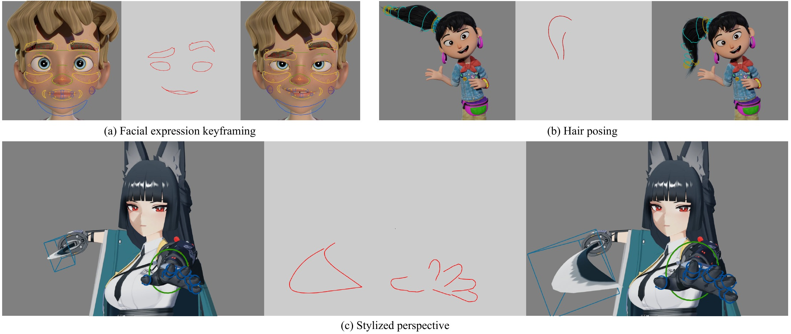
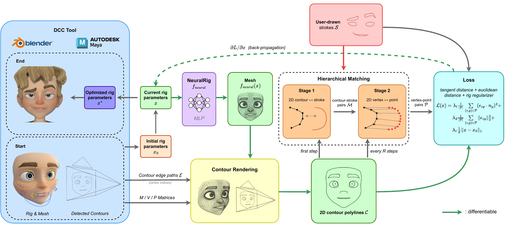
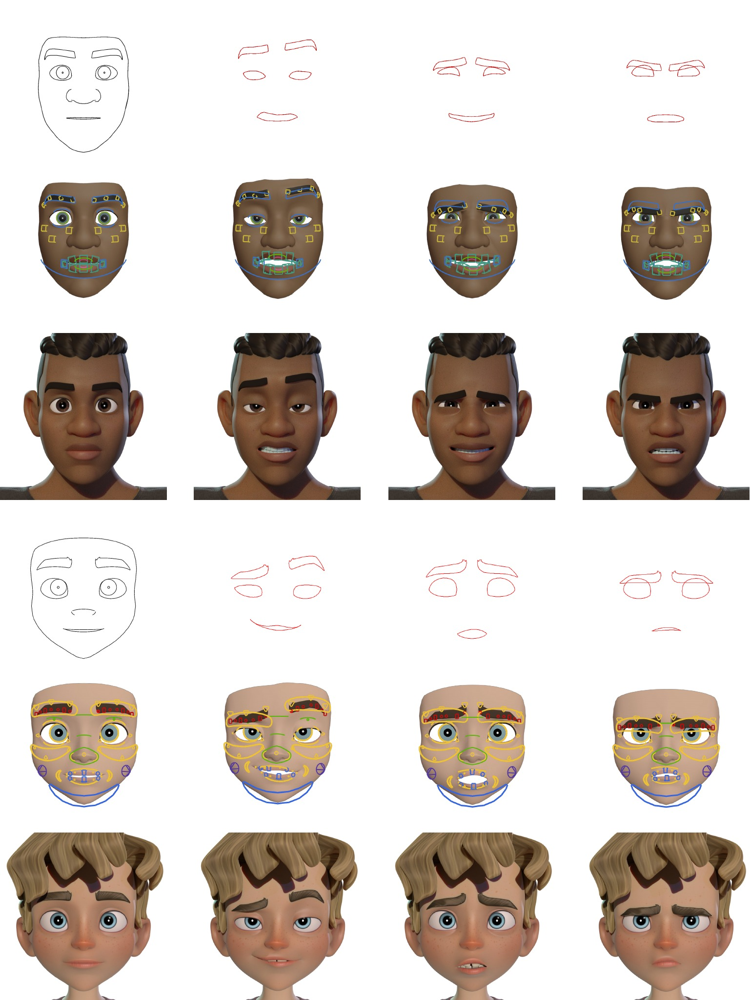
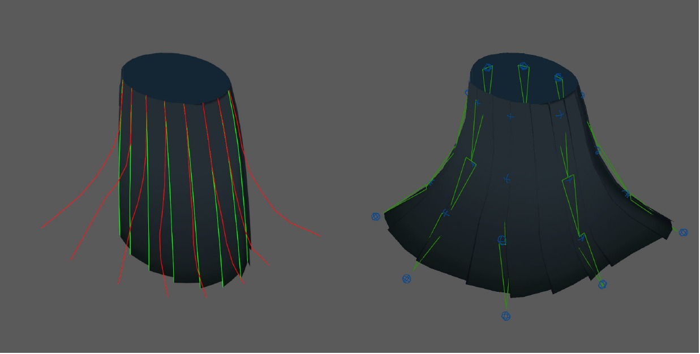
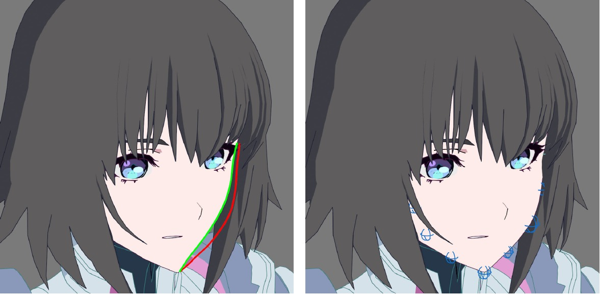

Draw
The artist redraws selected contours over the rendered view.

Given a rigged mesh, our method recovers the rig parameters that produce the artist's strokes. Applications include facial expression keyframing, hair posing, and stylized perspective. Character models © Blender Studio and miHoYo.
01
Stylized 3D character animation is largely hand-authored, with animators adjusting rig parameters one keyframe at a time. Because stylized work reads chiefly through contour lines, drawing contours in the camera view is a direct way to express artistic intent.
We recover high-level rig parameters from screen-space contour strokes. A pre-trained MLP surrogate provides a differentiable map from rig parameters to mesh vertices, replacing the production rig inside the optimization. By matching projected mesh contours to user-drawn lines and backpropagating their screen-space error, the method turns sketches into editable rig controls.
02
The production rig remains the artist's final authoring interface. The NeuralRig is used only as a differentiable path during optimization; recovered parameters are written back to the original DCC rig.
The artist redraws selected contours over the rendered view.
A two-stage matcher pairs strokes with projected contour vertices.
Screen-space losses backpropagate through the NeuralRig to the controls.

03
We demonstrate contour-driven rig inversion on facial expressions, articulated objects, view-specific shape correction, and exaggerated perspective. Individual poses are recovered in a few to a dozen seconds while remaining editable through the standard rig interface.



04
If you find this work useful, please cite the preprint:
@misc{zhu2026inverse,
title = {Inverse Rig Optimization from Line Drawings},
author = {Zihao Zhu and Yuki Koyama},
year = {2026},
eprint = {2609.00732},
archivePrefix = {arXiv},
primaryClass = {cs.GR},
url = {https://arxiv.org/abs/2609.00732}
}